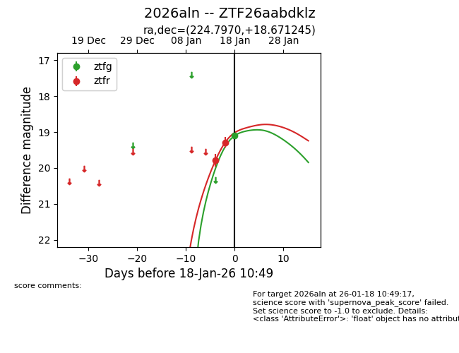
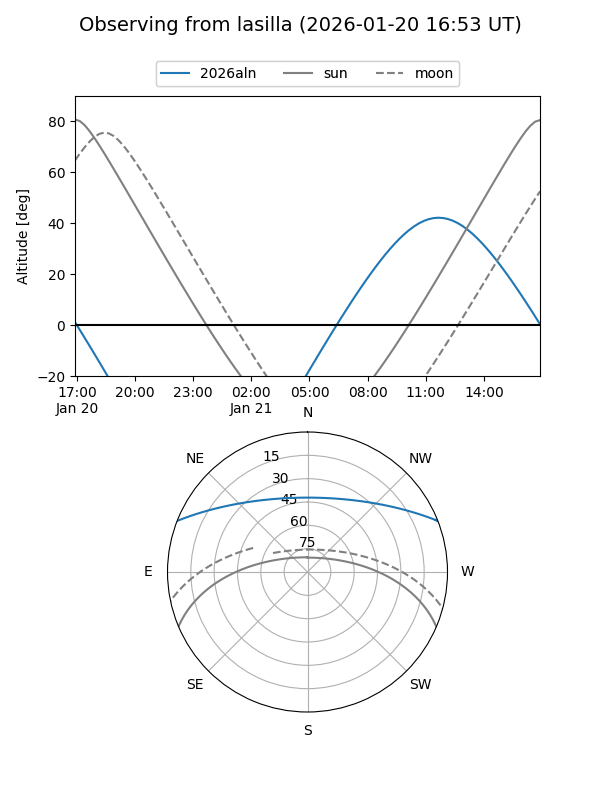
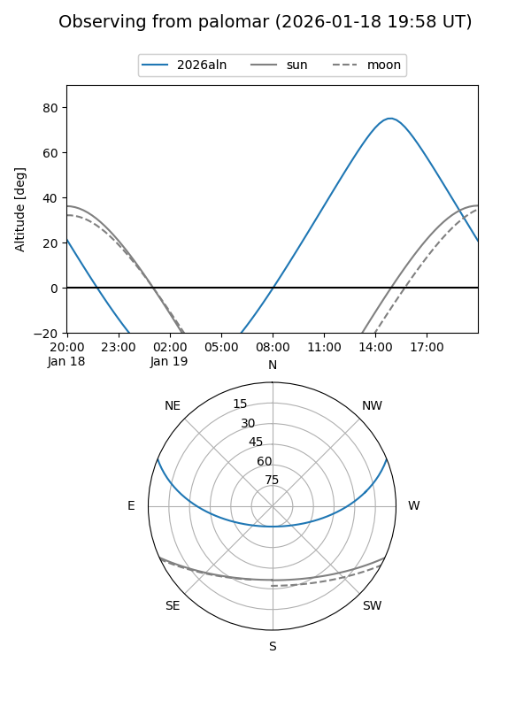
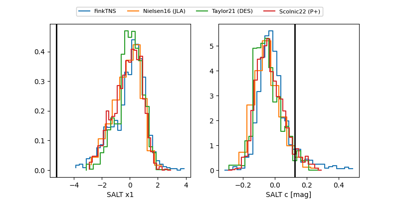

2026aln
Target 2026aln at 2026-01-25 11:31
Aliases and brokers:
FINK: link
Lasair: link
ALeRCE: link
TNS: link
YSE: link
alt names
ZTF26aabdklz (ztf,fink_ztf)
2026aln (tns,yse)
Coordinates:
equatorial (ra, dec) = 224.7970,+18.67124
equatorial (HMS+DMS) = 14:59:11.27,+18:40:16.48
galactic (l, b) = (23.6755,+59.48492)
Flags:
Photometry:
last ztfg=19.19, ztfr=18.83
2 ztfg, 5 ztfr detections
Lightcurve

Visibility


Additional plots
